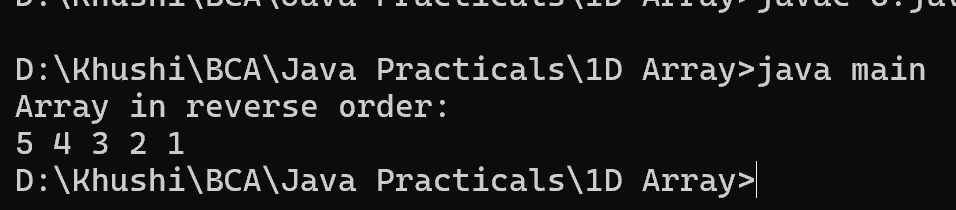

6. Program to print the elements of an array in reverse order
class main {
public static void main(String[] args) {
int[] array = {1, 2, 3, 4, 5};
System.out.println("Array in reverse order:");
for (int i = array.length - 1; i >= 0; i--) {
System.out.print(array[i] + " ");
}
}
}
